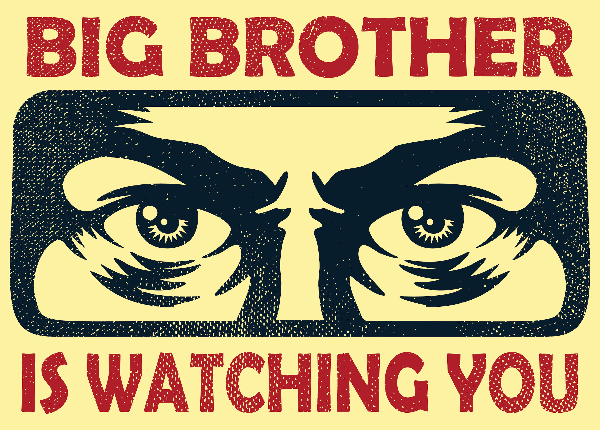

Falls du nun unsicher bist ob du deine Privatsphäre ausreichend schützt, solltest du dich vorher fragen wovor du dich schützen möchtest. Idealerweise ist dein erster Schritt die Bedrohungsmodellierung, auch Threat Modeling genannt.
Die Schlüsselfragen sind:
- Was möchte ich schützen?
- Vor wem möchte ich es schützen?
- Wie wahrscheinlich ist es, dass ich es beschützen werden muss?
- Wie schlimm sind die Konsequenzen, sollte ich versagen?
- Wie viel Aufwand bin ich bereits einzugehen um das Auftreten der Konsequenzen zu verhindern?
Das Threat Modeling ist individuell, jedoch gibt es gewöhnliche Ziele.
- Vermeidung von öffentlicher Exposition (s. OSINT)
- Selbstschutz vor großen Werbeunternehmen wie Facebook und Google, sowie weiteren Drittanbieter-Sammlern
- Schutz vor Massenüberwachung, ausgehend von Behörden (und Diensten), Organisationen, Webseiten, welche zusammenarbeiten um dich zu “tracken”
- Schutz deiner Daten vor digitalen Dienstleistern
- Schutz vor Malware, Daten-Lecks, oder anderen Attacken gegen Menschenmengen
- Schutz vor Hackern oder anderweitigen böswilligen Aktören, welche spezifisch Zugang zu deinen Daten zu erlangen versuchen
- Abtrennung deiner online Aktivität von deiner echten Identität um Schutz vor Aktören, die spezifisch deine Identität enthüllen wollen zu gewährleisten
Leider können wir im Rahmen der, von dir aufgerufenen, Projektarbeit gerade so Wasseroberfläche erkunden.
Die erste Bedrohung ist diejenige, vor der du dich am einfachsen Schützen kannst: Veröffentliche nichts von dir oder was mit dir in Verbindung gebracht werden kann. Natürlich kann das je nach Lebensstil, Bedürfnissen, oder anderweitigen Erfordernissen Konfliktgegenstand sein. Überlege dann, was du wirklich mit der Öffentlichkeit teilen möchtest und ob es nicht privatsphäre-freundlichere Alternativen gibt, bekannte “Story” funktionen im Messengern könnten ein Kompromiss sein, den du eingehen möchtest.
Vor weit verbreiteten Datensammlerei, auch geläufig unter “Surveillance Capitalism”, dem Kapitalismus gestützt auf Überwachung. Zu diesen “Überwachungskapitalisten” gehören unter Anderem Google und Facebook. Sie sind so sehr in unseren Alltag und das Internet integriert, dass es ein paar Tricks benötigt um sie zu vermeiden, wobei die vollständige Abtrennung dieser Giganten mehr Aufwand und ein mindestmaß an Willen deiner Kommunikationspartner erfordert. Es fängt ganz einfach dabei an, beispielsweise nicht Google als Suchmaschine zu benutzen. Eine Einsteiger-freundliche Alternative stellt startpage.org dar. Die Ergebnisse werden von Google bezogen, du sollst jedoch geschützt bleiben. Das Verlassen von Intergram dürfte mehr Leuten schwer fallen.
Berühmt-Berüchtigt in der Privatsspäre-Szene ist jedoch das Privatsphäre-Problem mit den Instant-Messengern, vorallem Whatsapp – sicher auch auf deinem Handy installiert. Whatsapp gehört dem Überwachungskapitalisten Facebook bzw. (umbenannt in) Meta. Meta verdient Geld an deinen Daten. Es ist anfangs kaum zu glauben wie viel aus den Daten die bei Whatsapp anfallen abgeleitet werden kann! Der Inhalt der Nachrichten ist dabei ausgeschlossen, der sei stets Ende-Zu-Ende verschlüsselt – das absolute Minumun wenn es um die Wahl des Messengers geht! Ein Video zu anfallenden Daten bei Whatsapp. Es gibt Alternativen zu Whatsapp. Die einsteigerfreundlichste App, die auch den Gold-Standart für Instant Messenging Sicherheit (vorallem Verschlüssellung) heißt so wie ihr Verschlüsselungs-Protokoll "Signal". Ein weiterer Messenger aus der Schweiz, welcher hohen Wert auf die Vermeidung von Metadaten setzt ist "Threema, sie ist komplett von Google und Apple Diensten entkoppelbar, hat also auch Vorteile gegenüber Signal. Natürlich gibt es viele Aspekte zu berücksichtigen. Eine Übersicht.
Desweiteren fließen Daten schon auf Betriebssystem-Level ab. Der Datenabfluss gehört sozusagen zu deiner Software mit dazu. Das muss jedoch nicht sein! Auf Android geräten können “Custom-ROMS”, sozusagen alternative Android Betriebssysteme, draufgespielt werden. Dies ist grundsätzlich für Fortgeschrittene, wird aber teilweise durch einfache Web-Tools sehr benutzerfreundlich angeboten. Ein solcher renomiertes Custom-Roms, welches gleich ein kleines Paket an nützlichen Werkzeugen zum Schutz der eigenen Privatsühäre mitbringt und Datenabluss verringert ist das vom Calyxinstitute entwickelte und bereitgestellte CalyxOS.
Ein weiterer renomierter Custom-Rom geht den extremen Weg und schneidet möglichst jegliche privatsphäre-unfreundlichen Verbindungen ab: GrapheneOS. Der Quellcode beider Betriebssysteme ist Open-Source, kann also öffentlich eingesehen werden, und ist somit potenziell sicherer (und eine Kontribution in den Gemeinbemühungen der Szene).
Und? Interesse geweckt? Es gibt noch viel zu entdecken!
Einen weitergehenden Einstig könnte dir Privacy Guides bieten. Hier findest du auch Alternativen zu deinen alltäglichen Apps und Diensten, die privatsphäre-freundlich und quelloffen sind.
Einen Eindrück davon, wie viele Daten beim gebrauch deiner alltäglichen Geräte, vermutlich vorallem dein Smartphone, anfallen und abgefangen und analysiert werden können kriegst du hier: Hitchhickers Guide to Online Anonymity
Dort findest du auch einige weitere Verweise und ausführliche Tipps zum Thema Online Anonymität.
(definitiv nicht klickbar) 